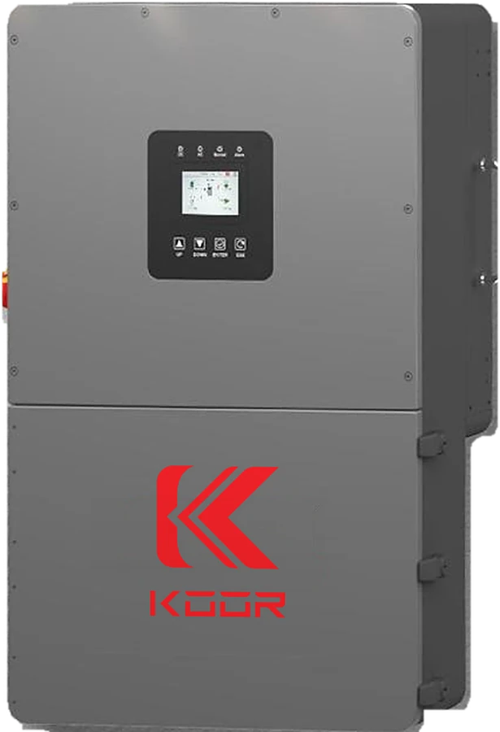

KOOR All-in-One Hybrid Inverter
KR-L8K-SPUS · KR-L10K-SPUS · KR-L12K-SPUS · KR-L15K-SPUS
One box does the whole job: solar in, battery charged, 120/240 V split-phase out. Grid-tied, off-grid or both, from 8 to 15 kW.
- 8 – 15 kWcontinuous output, split phase 120/240 V
- 3 MPPT · 6 inputsup to 22.5 kW of solar on the 15 kW
- 200 % surgefor 10 seconds — starts motors
- NEMA 4Xrated for indoor and outdoor, wet locations
- Up to 6 in parallel90 kW from one battery bank
- 10 yearswarranty from Fantastech
What it is
The KOOR All-in-One is a hybrid inverter and charge controller in one cabinet. It takes DC straight off the panels, charges a 48 V battery bank, and puts out regular 120/240 V split-phase power. It can run with the grid, without it, or ride through outages with the grid as backup.
Pick the size by the load, not the array: the 8 kW unit carries a house or a small shop, the 12 kW and 15 kW carry a dairy barn, a woodshop or a big off-grid home. Up to six can run in parallel from one bank for 90 kW.
The cabinet is NEMA 4X, so it can hang on an outside wall. Monitoring is built in: a Wi-Fi dongle ships in the box and reports to a phone app at no monthly cost.
Specifications
Read off the manual on file. Model columns run in the order listed above.
| Output | |
|---|---|
| Rated output power | 8 kW | 10 kW | 12 kW | 15 kW (KR-L8K / L10K / L12K / L15K) |
| Output voltage | 120 / 240 Vac split phase; 208 Vac 2- or 3-phase |
| Frequency | 60 Hz |
| Rated output current | 33.4 A | 41.7 A | 50 A | 62.5 A |
| Off-grid surge | 200 % of rated power for 10 seconds |
| Transfer time | under 10 ms |
| Waveform / THD | pure sine, THDv under 2 % on linear load |
| Parallel | up to 6 units — 90 kW |
| Solar (PV) input | |
| MPPT trackers | 3, two strings each — 6 PV inputs |
| Max PV input voltage | 550 V DC nameplate — design cold-corrected string Voc to 525 V |
| MPPT range | 120 – 480 V DC (full power from 120 / 125 / 145 / 195 V by model) |
| Start-up voltage | 120 V DC |
| Max current per MPPT | 26 A operating and short-circuit |
| Recommended max array | 12 kW | 15 kW | 18 kW | 22.5 kW |
| Battery | |
| Battery type | 48 V lithium (LiFePO4) or lead-acid |
| Rated battery voltage | 51.2 V DC (range 40 – 60 V) |
| Max charge / discharge | 167 A | 210 A | 250 A | 275 A |
| Battery communication | CAN / RS485 — closed-loop with KOOR batteries |
| Reverse-polarity protection | yes |
| Grid and generator | |
| Grid input | 120 / 240 Vac split phase, 60 Hz, pass-through up to 200 A |
| Generator input | dedicated generator terminals |
| Anti-islanding | active frequency drift |
| Physical | |
| Enclosure | NEMA 4X, indoor and outdoor, wet-location rated |
| Operating temperature | −25 °C to 60 °C (−13 °F to 140 °F); derates above 45 °C |
| Cooling | intelligent variable-speed fans, under 45 dB |
| Size (W × H × D) | 496 × 806 × 270 mm (19.5 × 31.7 × 10.6 in) |
| Weight | 55 kg (121 lb) |
| Display and monitoring | LCD + LED on the unit; phone app over Wi-Fi (dongle included) |
| Certification and warranty | |
| Safety | Certified by CSA Group to UL 1741 with Supplement SB (IEEE 1547-2018 grid support), UL 1699B arc-fault, CSA C22.2 No. 107.1; CA Rule 21, HECO Rule 14; FCC Part 15 Class B |
| Warranty | 10 years — see the warranty page |
In the box
- Inverter
- Wall-mount bracket and hardware
- Wi-Fi monitoring dongle
- PV connectors
- Communication cables
- User manual and Fantastech quick-start
Downloads
Questions we get
Does it work without the grid?
Yes. It runs a full off-grid system on solar and batteries alone, with 200 % surge for 10 seconds to start pumps and compressors. Add grid or a generator later if you want backup.
Which batteries does it pair with?
Any 48 V lithium or lead-acid bank. With the KOOR 16K Pro or KOOR Active Stack it runs closed-loop over CAN, so the inverter charges off the battery's real state of charge.
How much solar can I put on it?
Up to 12, 15, 18 or 22.5 kW of panels for the 8, 10, 12 and 15 kW models. Three trackers, two strings each, 26 A per tracker. Keep cold-corrected string voltage under 525 V.
Can I run more than one?
Up to six in parallel from one battery bank — 90 kW. On a farm, a second unit is also a backup: if one ever goes down, the other keeps the milking going.
Can it go outside?
Yes. The cabinet is NEMA 4X and wet-location rated, from −25 °C to 60 °C. Keep it out of direct sun where you can; it derates above 45 °C (113 °F).
Is it UL listed?
It is certified by CSA Group — an NRTL — to UL 1741 with Supplement SB and to UL 1699B. Ask us for the certificate for your inspector.
What about monitoring?
A Wi-Fi dongle is in the box and reports to a phone app at no monthly cost. No Wi-Fi at the site? We supply a hotspot that covers it.
What is the warranty?
10 years from Fantastech Energy Solution LLC, the seller. Register the card that comes in the box.